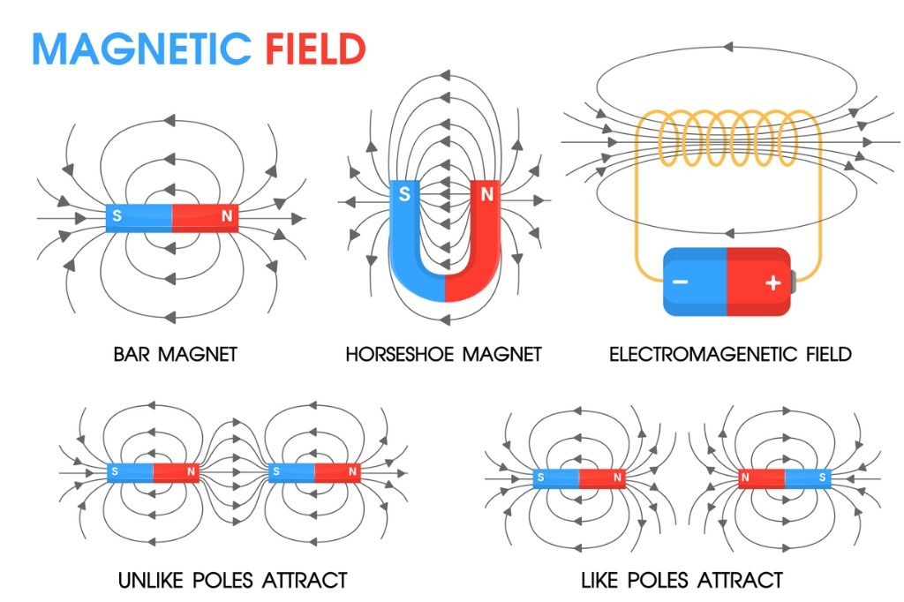
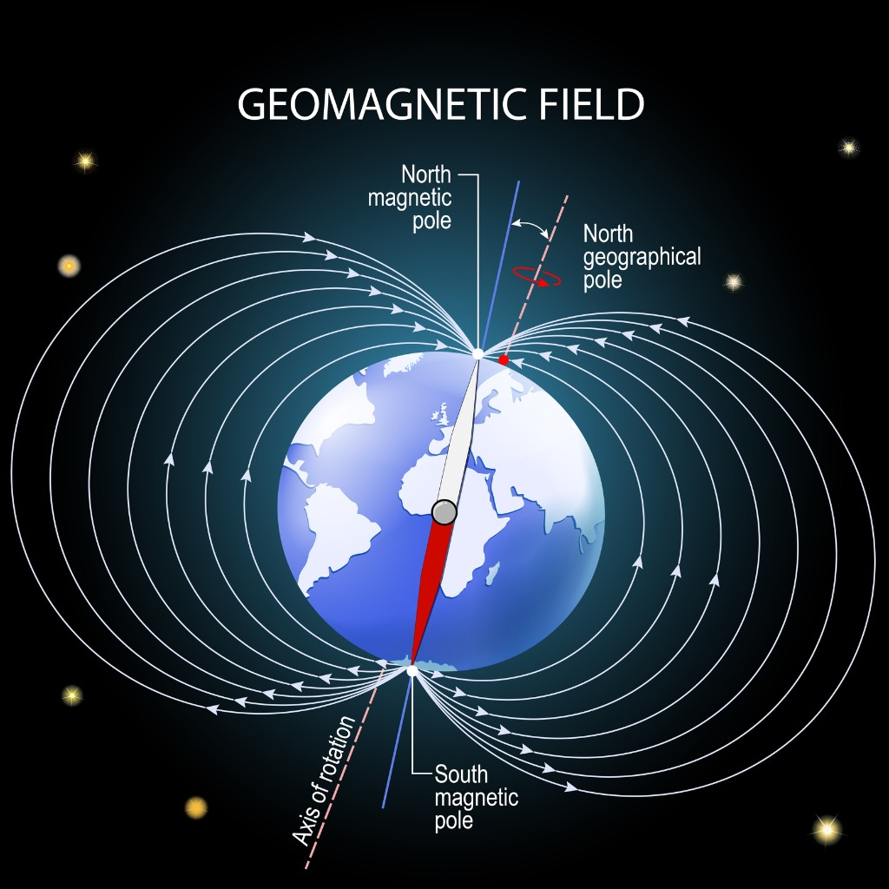
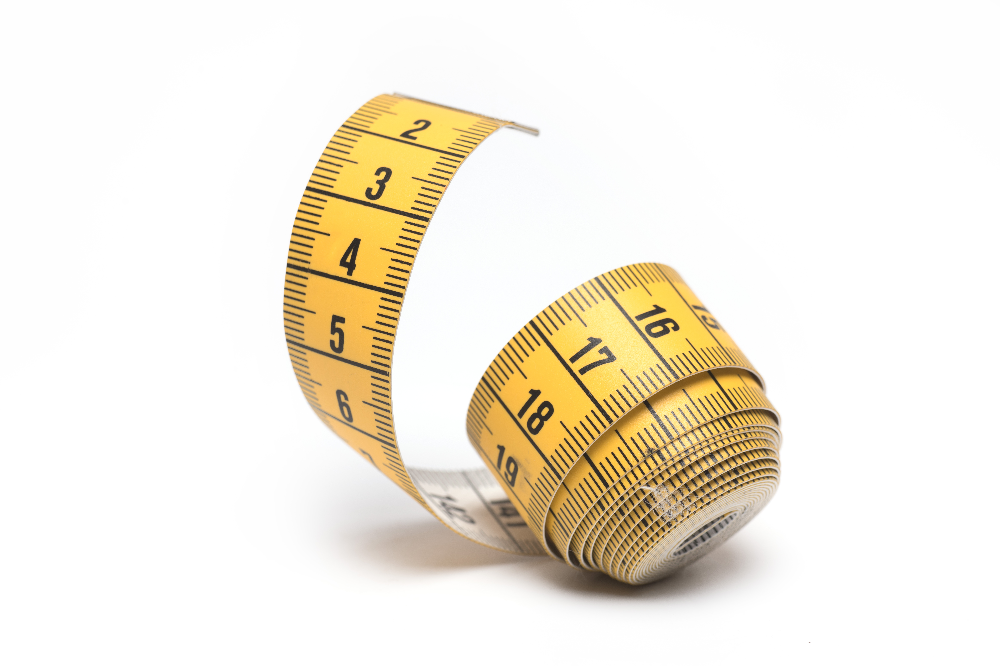

Liliana Rzepczyk , Aleksandra Szymanik
Klasa 8B
SP37 Tychy
Temat : BIEGUNY MAGNETYCZNE
wiesz co to magnetyzm
wiesz co to ferromagnetyk
wiesz jak dziają bieguny magnetyczne
Na początku warto jest się dowiedzieć czym właściwie jest magnetyzm..
Magnetyzm to zjawiska fizyczne związane z polem magnetycznym. Pole magnetyczne może być wytwarzane przez prąd elektryczny, jak i materiały magnetyczne.


Zjawisko magnetyzmu możemy zauważyć m.in. przykładając magnes do ferromagnetyku,
czyli substancji o silnym oddziaływaniu magnetycznym. Ferromagnetyk, np. żelazo jest przyciągane przez magnes.
Substancje takie jak żelazo można przekształcić w magnes trwały namagnesowując go.
Namagnesowanie ferromagnetyku polega na uporządkowaniu znajdujących się w nim domen magnetycznych.
Bawiąc się magnesami, na pierwszy rzut oka można zauważyć, że czasem się przyciągają, a czasem odpychają.
Jest to sprawa biegunów. Każdy magnes ma dwa bieguny: N oraz S.
Różnomienne bieguny się przyciągają, a jednomienne odpychają.

Najpopularniejszym przedmiotem, w którym wykorzystuje się magnetyzm jest kompas.
Ziemia zachowuje się tak, jakby była magnesem zwróconym biegunem N w stronę południowego bieguna geograficznego i biegunem S zwróconym w stronę północnego bieguna geograficznego,
a igła kompasu pod jego oddziaływaniem zmienia swój kierunek, pokazując nam gdzie jest północ i reszta kierunków świata.


Warto zapamiętać!
| wielkość podstawowa |
jednostka podstawowa |
symbol jednostki |
| czas |
sekunda |
s |
| długość |
metr |
m |
| masa |
kilogram |
kg |
|
 |
|
Dowiedz się więcej...